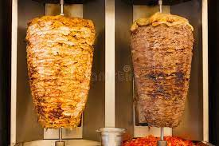

Shawarma

Shawarma is thinly sliced cuts of meat, like chicken, beef, goat, lamb,
and sometimes turkey rolled into a large piece of flatbread or pita that has been steamed or heated.
Inside the pita, foods like hummus, tahini, pickles, vegetables, and even french fries are added.
Ingredients
Shawarma:
- 1 tablespoon olive oil
- 1 pound beef top sirloin, thinly sliced
- 1 tablespoon shawarma seasoning
- 1 teaspoon ground allspice
- ½ teaspoon salt
Tahini Sauce:
- ½ cup tahini
- 3 tablespoons plain yogurt
- ½ lemon, juiced
- ½ teaspoon salt
- 1 (10 ounce) package large flour tortillas
- 2 tomatoes, halved and sliced
- 1 onion, thinly sliced
Directions:
- Heat olive oil in a large skillet over medium heat.
Add beef, shawarma seasoning, allspice, and 1/2 teaspoon salt; cook, turning occasionally,
until beef is browned and tender, 3 to 5 minutes.
- Whisk tahini, yogurt, lemon juice, and 1/2 teaspoon salt together in a small bowl until creamy.
- Spread 1 to 2 tablespoons tahini sauce in the center of each tortilla.
Divide beef slices, tomato slices, and onion slices evenly among tortillas. Roll up tortillas.
Nutrition FACT
Per serving 637 calories; protein 31.2g; carbohydrates 50.3g; fat 35.7g; cholesterol 61mg; sodium 1122.3mg.